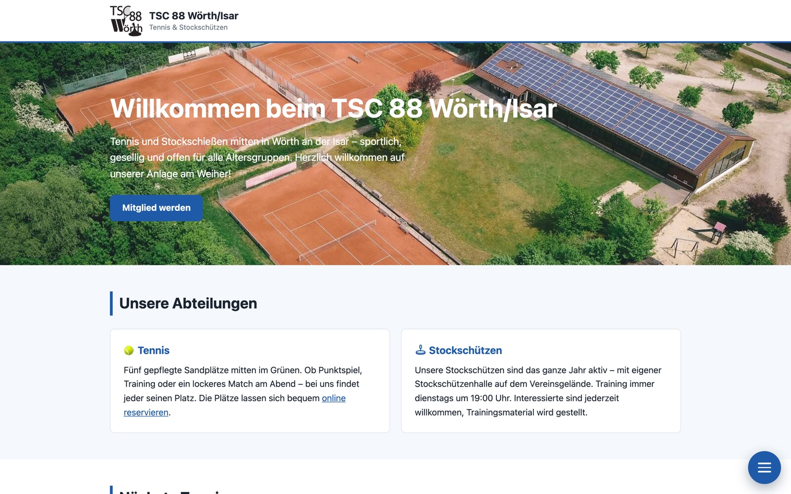
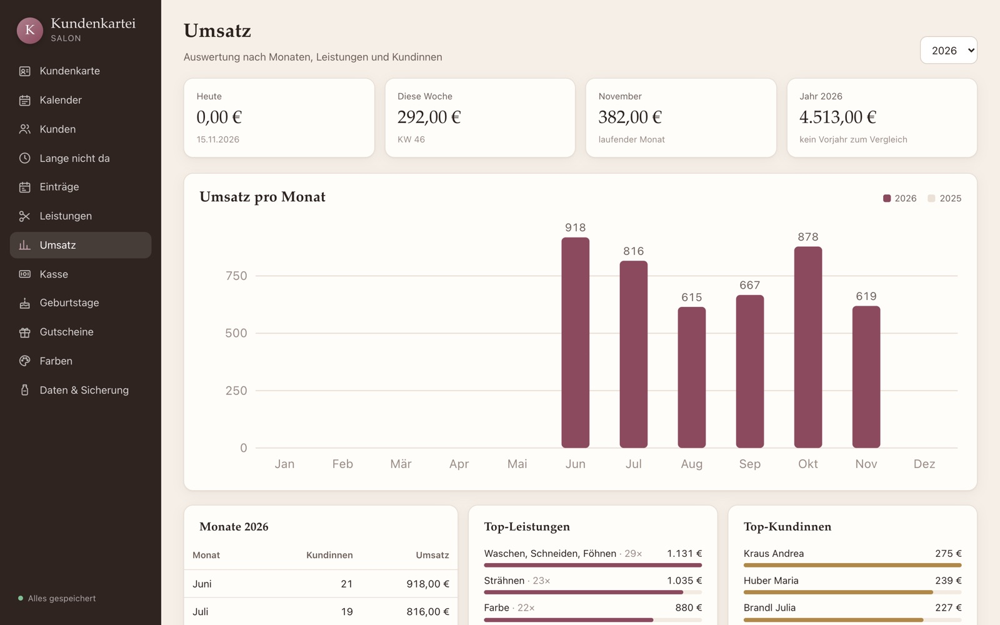
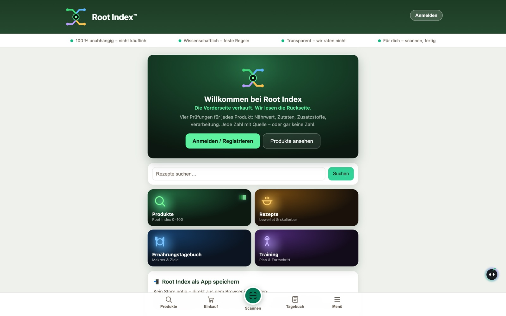
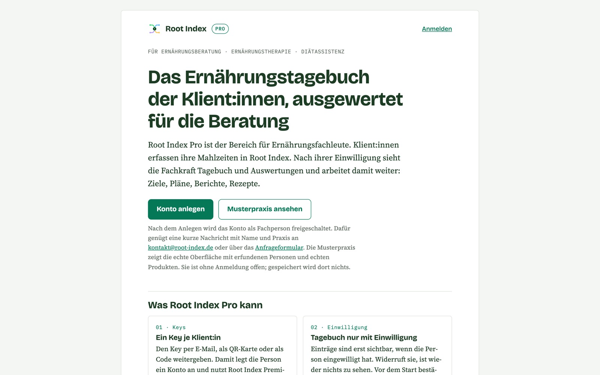
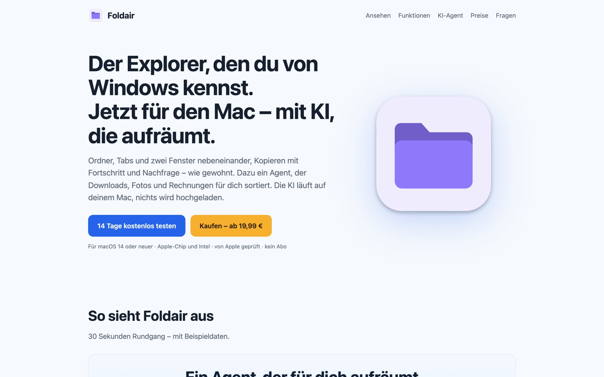
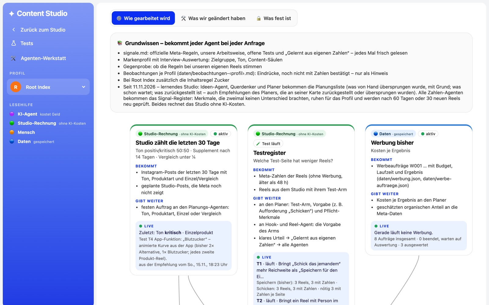

Ralph Denk · Individuelle Tools & Web-Apps
Werkzeuge, die zu Ihrer Arbeit passen – nicht umgekehrt.
Ich baue eigene Produkte und individuelle Lösungen für Vereine, Handwerk und kleine Firmen: eine Kundenkartei statt Excel, eine Vereinsseite, die der Vorstand selbst pflegt, eine App, die eine lästige Routine übernimmt.
„Aus den Gedanken und Ideen anderer wird mein Motor.“Ralph Denk
Idee besprechen
Erst zuhörenWas kostet heute Zeit oder Nerven? Daraus entsteht der Plan – nicht aus einem Baukasten.
In kleinen SchrittenSie sehen früh, was entsteht, und sagen, was passt. So wird es Ihr Werkzeug.
Ehrlich bleibenIch sage, was sinnvoll ist und was nicht – auch wenn der Auftrag dadurch kleiner wird.
Projekte
Je Projekt: was das Problem war, was ich gebaut habe, was es bringt.
Für andere gebaut

Vereinshomepage · Web-App
TSC 88 Wörth/Isar
- Problem
- Ein Verein lebt vom Ehrenamt – die Seite muss sich von Leuten pflegen lassen, die keine Technik lernen wollen.
- Lösung
- Einfache Verwaltung für Termine, Nachrichten und Ergebnisse (Ergebnislisten liest eine KI aus), Mitgliederbereich mit Konten je Abteilung, Eintragelisten fürs Training.
- Nutzen
- Der Vorstand hält alles selbst aktuell, Mitglieder finden Termine und Ergebnisse an einem Ort.
Seite ansehen →

Kundenkartei · App im Browser, ohne Server
Kundenkartei für einen Salon
- Problem
- Die Kundenkartei lag in einer gewachsenen Excel-Datei – unübersichtlich und ohne Sicherung.
- Lösung
- Eine kleine App: Kundinnen, Kalender, Kasse, Gutscheine, Farbrezepte mit Fotos, Geburtstage und Umsatz – mit Import der alten Daten und verschlüsselter Sicherung auf Stick oder OneDrive.
- Nutzen
- Die Daten bleiben im Salon, es gibt kein Abo, und die Arbeit am Empfang geht schneller.
Kein öffentlicher Link – hier liegen Kundendaten.
Bild mit erfundenen Beispieldaten.
Eigene Produkte

Web-App · iPhone-App
Root Index
- Problem
- Die Vorderseite einer Packung verkauft – was drin ist, steht klein auf der Rückseite.
- Lösung
- Produkt scannen: Root Index bewertet es von 0 bis 100 nach Nährwerten, Zutaten, Zusatzstoffen und Verarbeitung, jede Zahl mit Quelle. Dazu Tagebuch, Rezepte, Einkaufsliste.
- Nutzen
- Beim Einkaufen in Sekunden sehen, was man in der Hand hält.
root-index.de →

Web-App für Fachleute
Root Index Pro
- Problem
- Ernährungsprotokolle auf Papier sind lückenhaft und mühsam auszuwerten.
- Lösung
- Klient:innen erfassen ihre Mahlzeiten in der App; nach Einwilligung sieht die Fachkraft Tagebuch und Auswertungen und arbeitet damit weiter – Ziele, Pläne, Berichte.
- Nutzen
- Die Beratung beginnt mit echten Daten statt mit Erinnerungen und spart Zeit bei der Auswertung.
Root Index Pro →

Mac-App
Foldair
- Problem
- Wer von Windows auf den Mac wechselt, vermisst den Explorer: Ausschneiden, zwei Fenster nebeneinander, Server-Laufwerke.
- Lösung
- Ein Dateimanager, der so arbeitet wie gewohnt – mit einem KI-Agenten, der Downloads, Fotos und Rechnungen sortiert, direkt auf dem Mac, ohne Upload.
- Nutzen
- Umsteiger finden sich sofort zurecht, die Ablage erledigt sich nebenbei.
foldair.de →

Web-App mit KI-Agenten
Content Studio
- Problem
- Gute Posts für Instagram und Facebook kosten Zeit, und ob sie wirken, bleibt oft Bauchgefühl.
- Lösung
- KI-Agenten planen Posts, schreiben Hooks und bauen Reels; jeden Tag kommen die echten Zahlen von Meta zurück, und das Studio lernt daraus.
- Nutzen
- Beiträge entstehen schneller, Entscheidungen beruhen auf eigenen Zahlen statt auf Vermutungen.
Internes Werkzeug – Vorführung auf Anfrage.
Sie haben eine Idee?
Oder einen Ablauf, der jeden Tag Zeit kostet? Erzählen Sie mir davon – ein erstes Gespräch ist unverbindlich. Ich sage Ihnen ehrlich, ob und wie ich helfen kann.
Mail schreiben
LinkedIn
kontakt@root-index.de · Antwort in der Regel innerhalb von 48 Stunden